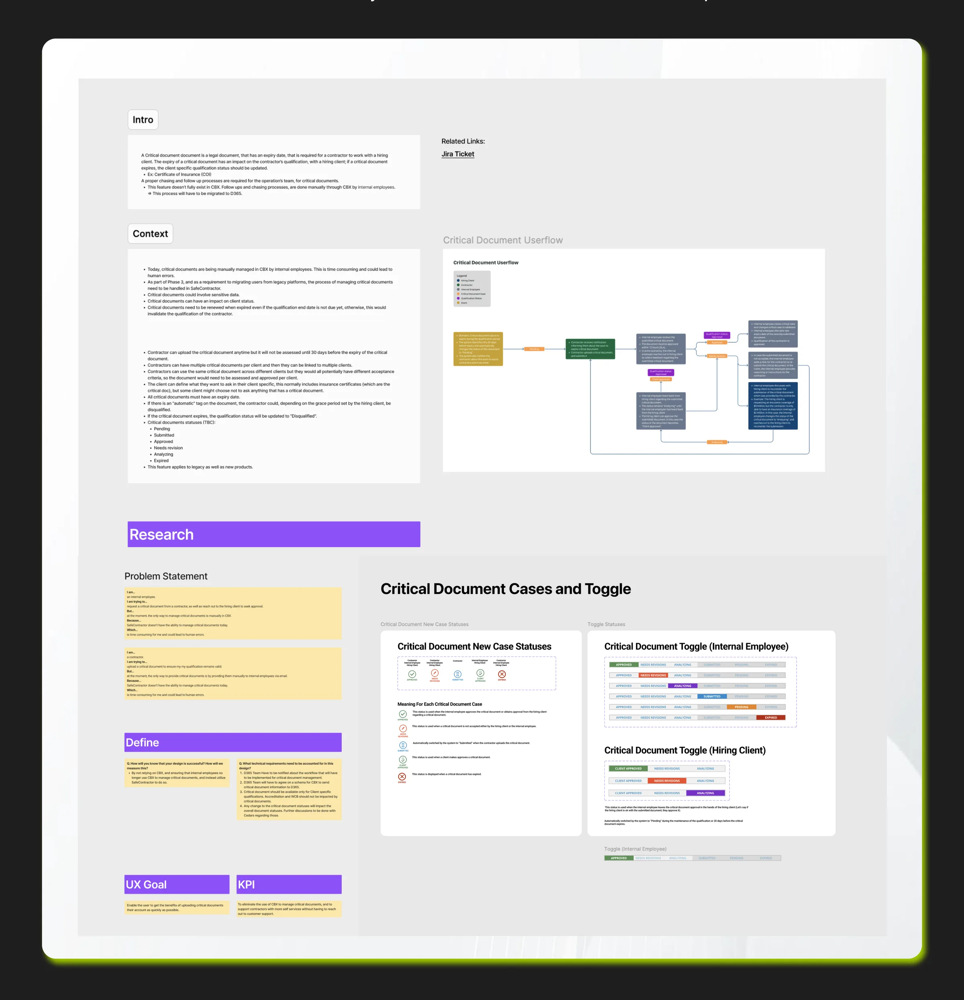
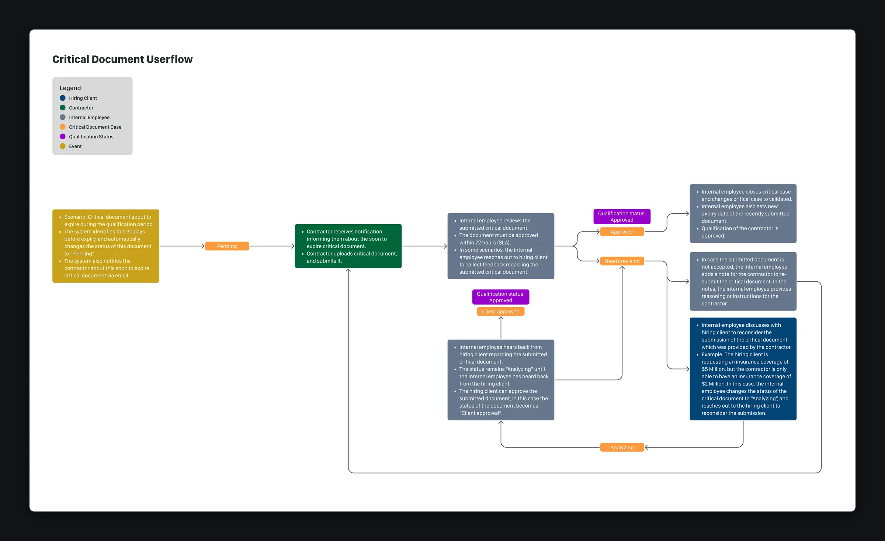
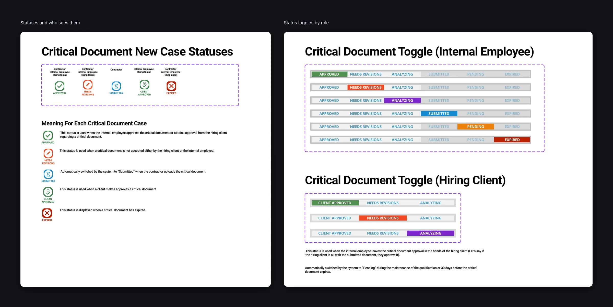
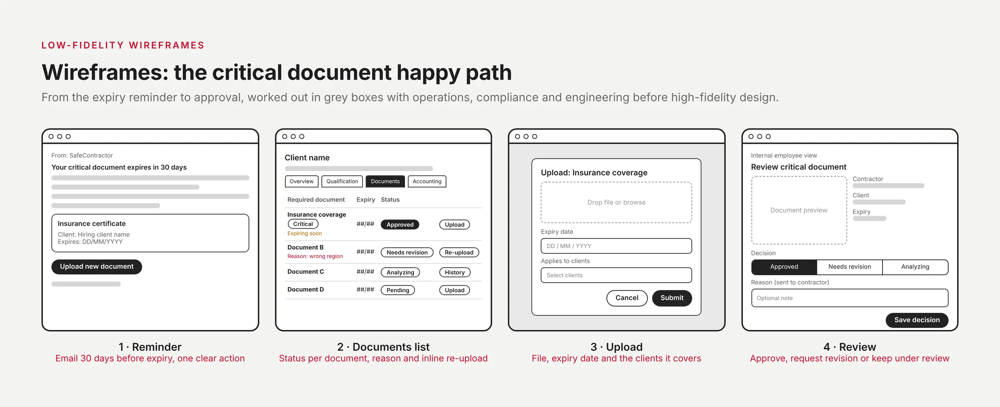
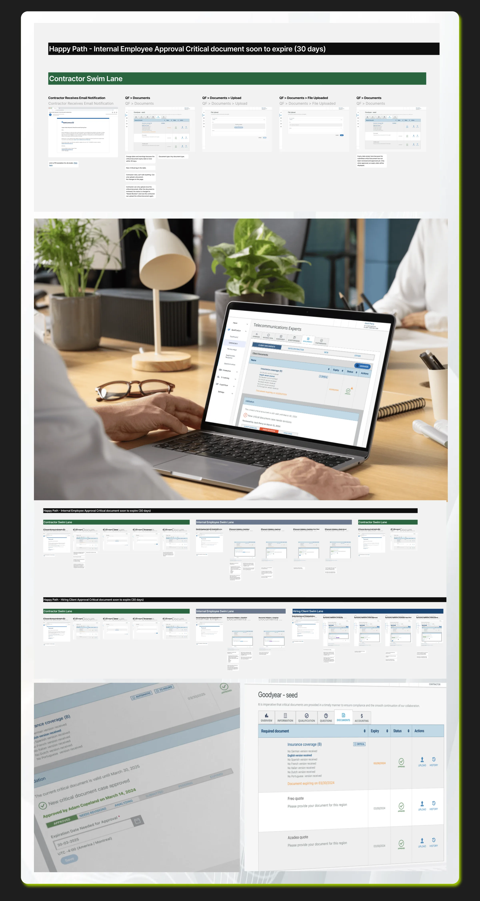
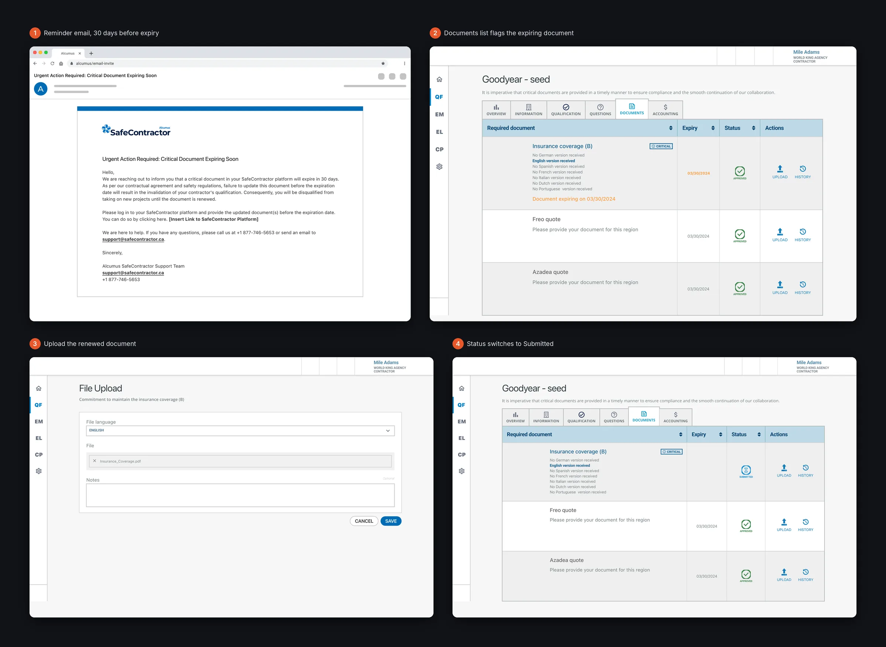
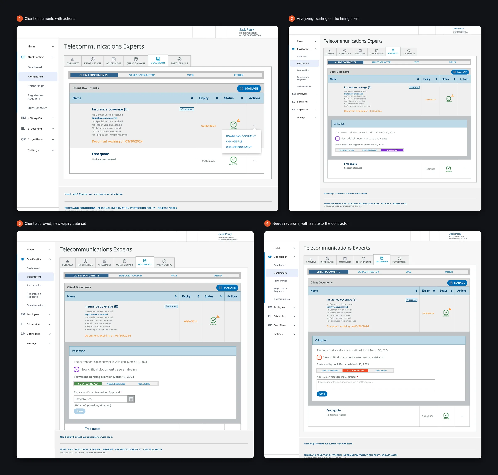
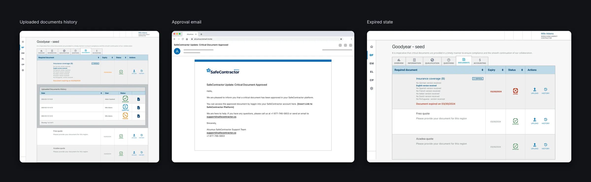

Problem Statement
How might we enable the user to get the benefits of uploading critical documents to their account as quickly as possible?
How might we eliminate the use of CBX to manage critical documents, and to support contractors with more self services without having to reach out to customer care?
Two groups lived with the same manual process from different sides:
- Requests critical documents from contractors by phone
- Reaches out to hiring clients to get documents approved
- Manages it all by hand in CBX, which is slow and error-prone
- Can only send documents to staff by email
- Can’t upload or track them in SafeContractor
- Risks losing a qualification if a document lapses
Role & Responsibilities
As Lead Product Designer, I owned the end-to-end UX for introducing Critical Documents into the SafeContractor platform. I led discovery, defined the experience strategy, and translated complex operational and compliance workflows into a scalable, self-serve product experience.
I collaborated closely with product, engineering, operations, and compliance stakeholders, aligned legacy CBX processes with the new D365-backed platform, and ensured the solution handled sensitive data, client-specific rules, and edge cases. I also guided design execution, reviews, and handoff to ensure production-ready quality.
Research
I conducted deep discovery to understand the existing manual workflows used by internal teams and contractors, identifying pain points such as high operational effort, delays, and risk of human error. This included mapping current CBX processes, documenting contractor and internal user journeys, and validating business rules around document expiry, qualification status, grace periods, and client-specific acceptance criteria.
Insights from operations, customer support, and compliance teams directly informed UX decisions, helping prioritize self-service, automation, and clarity around document status and next steps.
What makes a document “critical”
A critical document is a legal document with an expiry date that a contractor needs in order to work with a hiring client, such as a Certificate of Insurance. Discovery surfaced the rules the design had to respect:
- Contractors can upload at any time, but a document is only assessed from 30 days before it expires.
- One document can be linked to several hiring clients, and each client can have different acceptance criteria, so it’s approved per client.
- Every critical document has an expiry date. If it expires, the contractor’s client-specific qualification becomes Disqualified, even if the qualification itself isn’t due.
- Documents tagged Automatic can disqualify a contractor on their own, depending on the grace period the hiring client sets.
- Documents can contain sensitive data, and the feature had to work for legacy and new products.
Goal, measure and constraints
UX goal: stop managing critical documents in CBX, and give contractors self-service without contacting support. How we’d know it worked: internal teams manage critical documents in SafeContractor instead of CBX.
Constraints: the D365 team had to agree on a schema for CBX to send critical document data to D365; critical documents apply only to client-specific qualifications, not accreditation or WCB; and any change to a critical document’s status affects the overall document status.

Research, Options & Trade-offs
What research revealed
Contractors uploaded documents but couldn't tell whether they'd been accepted, so they chased customer care. Internal teams were re-checking expiry dates by hand.
Directions explored
- Option A: A single bulk-upload screen. Dropped: client-specific rules meant each document needed its own status and feedback.
- Option B: A document list with per-item status (accepted, pending, expiring, rejected with reason) and inline re-upload. Chosen.
Trade-offs
Some client-specific acceptance rules stayed manual at launch because the D365 integration couldn't express them yet. We designed clear "under review" states rather than delaying the release.
Mapping the flow
Before any screens, I mapped how a critical document moves between the system, the contractor, the internal employee and the hiring client, with the contractor’s qualification status shown next to each document status.
- 1 Pending, 30 days before expiry
- 2 Contractor uploads
- 3 Review within 72 hours
- 4 Approved, needs revision or analyzing
The branches mattered most. If a hiring client asks for $5 million of insurance coverage and the contractor can only hold $2 million, the internal employee moves the document to Analyzing and asks the client to reconsider. If the client accepts, it becomes Client approved; if not, the contractor gets a note explaining what to resubmit.

A status for every step
Each step needed a clear status, and each role sees only the ones that matter to them:
- Pending: set automatically 30 days before a document expires, or during qualification maintenance.
- Submitted: set automatically when the contractor uploads a document.
- Analyzing: the internal employee is waiting on the hiring client.
- Client approved and Approved: accepted by the hiring client, or by the internal employee.
- Needs revisions: not accepted, with a note for the contractor.
- Expired: the document has lapsed.
Internal employees change the status with a six-option toggle. Hiring clients get a shorter one: Client approved, Needs revisions or Analyzing.

Wireframes
With the business rules mapped, I sketched the happy path in low fidelity: the 30-day expiry reminder, the contractor’s documents list with a status for every document, the upload step and the internal review. Operations, compliance and engineering checked each status and edge case against these before high-fidelity design.

High-Fidelity Designs
I designed a comprehensive, high-fidelity experience that enables contractors to upload, track, and manage critical documents independently, while giving internal teams clear visibility and control. The designs introduced clear document statuses, expiry indicators, notifications, and qualification impacts, ensuring users always understood what was required and why.
The solution supports multiple documents, multi-client usage, client-specific assessments, and automated disqualification logic, delivering a scalable, compliant, and intuitive experience that replaces manual CBX workflows and improves efficiency, accuracy, and retention.

Contractor experience
Thirty days before a document expires, the contractor gets an email and the document is flagged in their Documents tab. They upload the renewed file with its language and an optional note, and the status changes to Submitted right away, so they know it’s in review without calling support.

Internal review and client approval
Internal employees review each submitted document in an expandable Validation panel under the document row. They set the status, add a note when revisions are needed, and set the new expiry date when they approve, which updates the contractor’s qualification. When a hiring client needs to weigh in, the document stays in Analyzing until the client responds.

History, emails and expiry
Every upload is kept in a document history with its date, the person who uploaded it and its status. Contractors get an email when a document is approved, and an expired document is marked clearly in red so nobody misses it.

Results
Document-related support tickets dropped by 90%, from about 200 to 20 a month, within 3 months of launching automation.
How we measured: document-related ticket volume in the support system, compared before and after automation, from Zendesk.